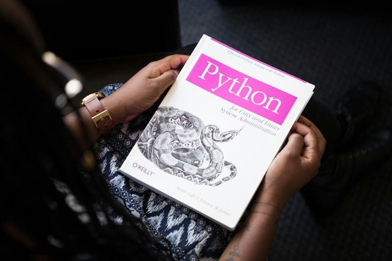

Links [Hiperlinks]
Link absoluto
Ir para página do OpenBSD
Abrir página do FreeBSD em uma nova guia
Link relativo
Ir para página 2
Ir para site/página3
Imagens
Machine Learning: como a inteligência artificial aprende?
